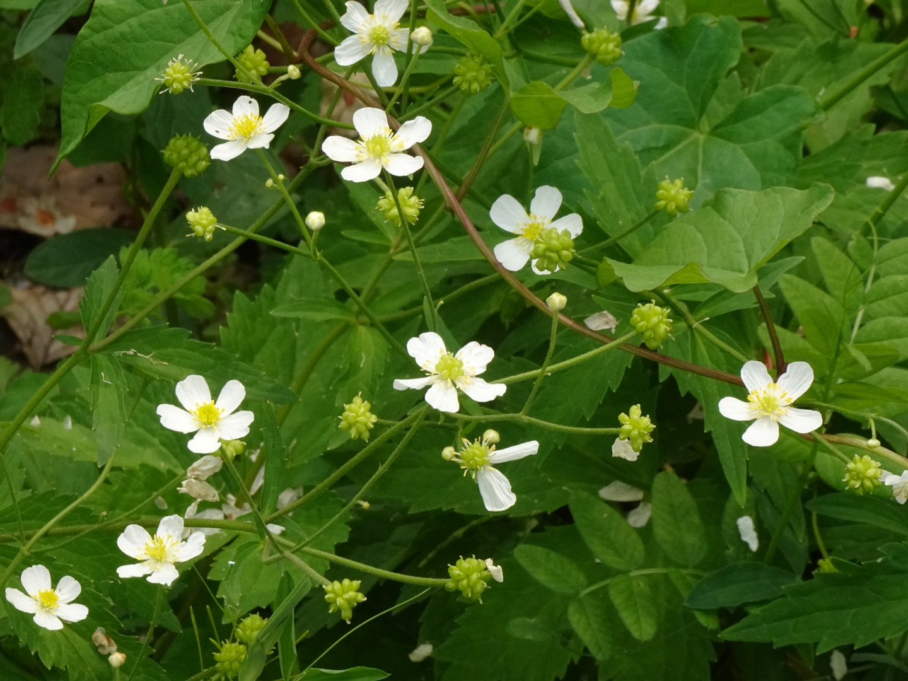
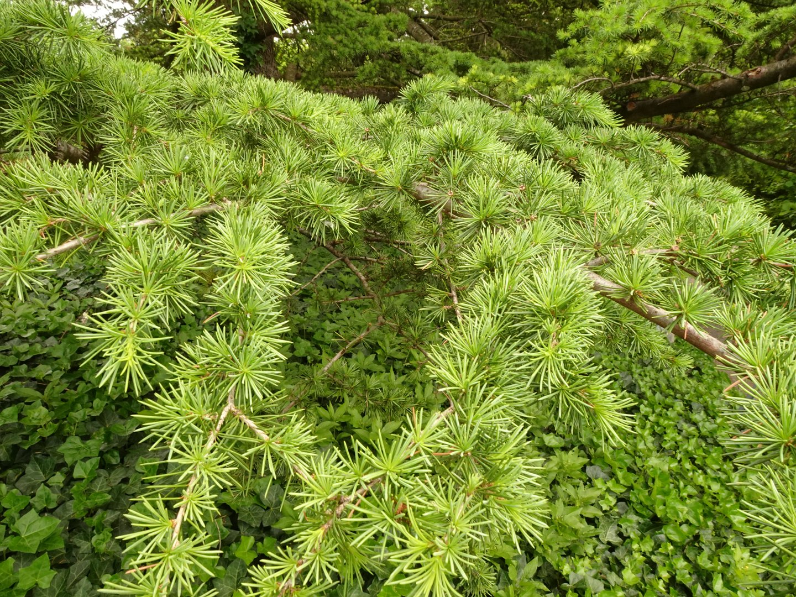
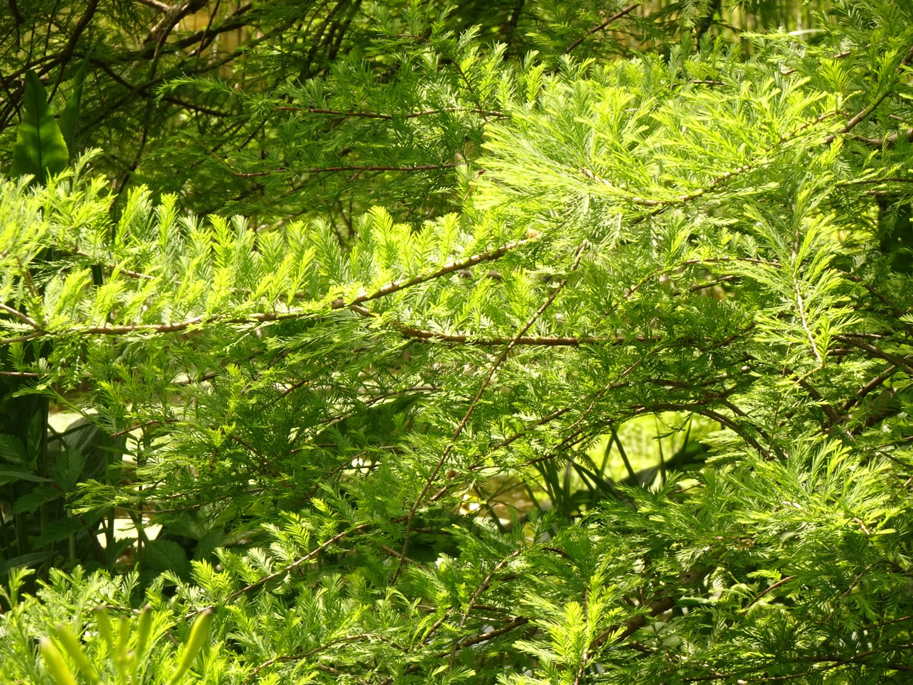
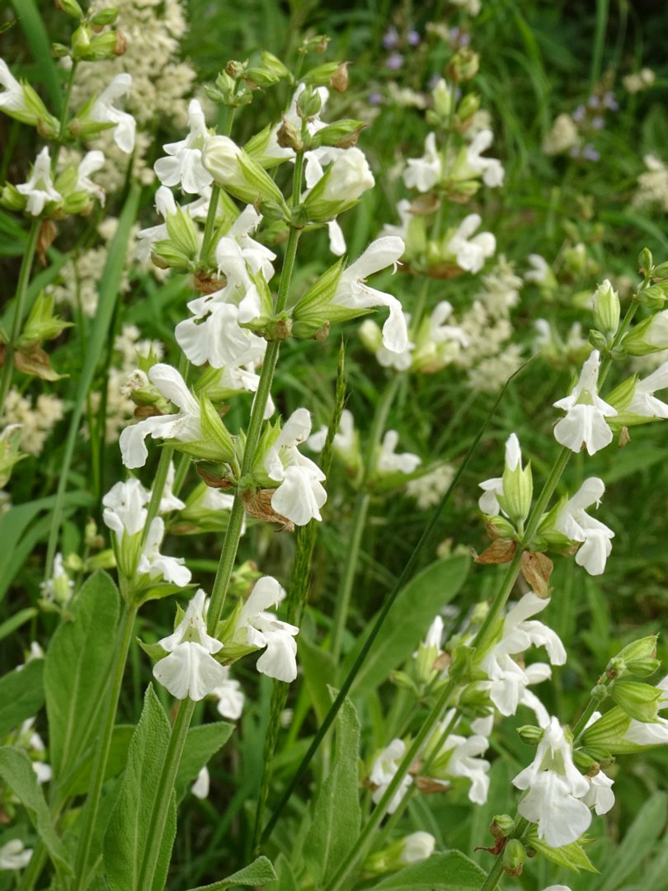
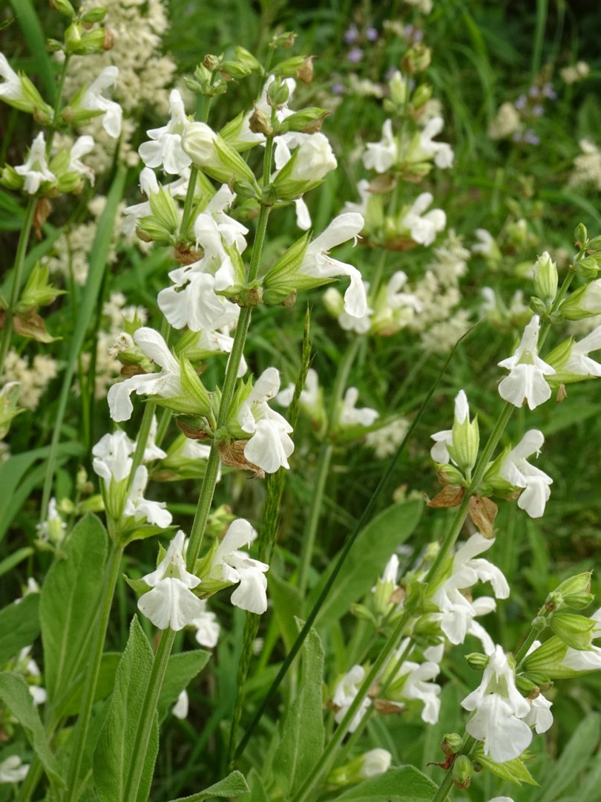

Botanical Garden




 


en. aconite-leaf buttercup, ru. Лютик борецелистный, lat. Ranunculus aconitifolius
(5 images)
en. allan's hebe, ru. Хебе Аллана, lat. Hebe allanii
(4 images)
en. asphodel cranesbill, ru. Герань асфоделевидная, lat. Geranium asphodeloides
(5 images)
en. Atlas cedar, ru. Кедр атласский, lat. Cedrus atlantica
(3 images)
en. bald cypress, ru. Таксодиум двурядный, lat. Taxodium distichum
(7 images)
en. Barley 'Plaisant', ru. Ячмень обыкновенный 'Приятный', lat. Hordeum vulgare 'Plaisant'
(4 images)
en. black mulberry, ru. Шелковица чёрная, lat. Morus nigra
(3 images)
en. blue flax, ru. Лён нарбонский, lat. Linum narbonense
(5 images)
en. bower plant, ru. Пандорея жасминовидная, lat. Pandorea jasminoides
(6 images)
en. broad-leaved bog-cotton, ru. Пушица широколистная, lat. Eriophorum latifolium
(5 images)
en. california poppy, ru. Эшшольция калифорнийская, lat. Eschscholzia californica
(4 images)
en. canada anemone, ru. Ветровник канадский, lat. Anemonidium canadense
(3 images)
en. cherry rhododendron, ru. Рододендрон вишневый, lat. Rhododendron cerasinum
(4 images)
en. common holly, ru. Падуб обыкновенный, lat. Ilex aquifolium
(4 images)
en. common ivy, ru. Плющ обыкновенный, lat. Hedera helix
(2 images)
en. common mare's-tail, ru. Хвостник обыкновенный, lat. Hippuris vulgaris
(4 images)
en. common rock-rose, ru. Солнцецвет монетолистный, lat. Helianthemum nummularium
(3 images)
en. common salvinia, ru. Сальвиния маленькая, lat. Salvinia minima
(3 images)
en. common wheat 'Camedo', ru. Пшеница мягкая 'Камедо, lat. Triticum aestivum 'Camedo'
(2 images)
en. coral bells, ru. Гейхера кроваво-красная, lat. Heuchera sanguinea
(3 images)
en. cork oak, ru. Дуб пробковый, lat. Quercus suber
(3 images)
en. durum, ru. Пшеница твердая, lat. Triticum durum
(5 images)
en. european waterclover, ru. Марсилия четырёхлистная, lat. Marsilea quadrifolia
(5 images)
en. forest wallflower, ru. Желтушник лесной, lat. Erysimum sylvestre
(3 images)
en. fringed water lily, ru. Болотноцветник щитолистный, lat. Nymphoides peltata
(2 images)
en. fruit-scented sage, ru. Шалфей фруктовый, lat. Salvia dorisiana
(3 images)
en. giant rhubarb, ru. Гуннера красильная, lat. Gunnera tinctoria
(8 images)
en. greater meadow-rue white form, ru. Василисник водосборолистный белая форма, lat. Thalictrum aquilegiifolium f. alba
(5 images)
en. greater quaking-grass, ru. Трясунка большая, lat. Briza maxima
(5 images)
en. greek sage, ru. Шалфей кустарниковый, lat. Salvia fruticosa
(5 images)
en. griffith's spurge, ru. Молочай Гриффита, lat. Euphorbia griffithii
(5 images)
en. Indian plum, ru. Эмлерия вишнеподобная, lat. Oemleria cerasiformis
(6 images)
en. japanese umbrella-pine, ru. Сциадопитис мутовчатый, lat. Sciadopitys verticillata
(4 images)
en. jupiter's beard, ru. Язвенник борода Юпитера, lat. Anthyllis barba-jovis
(7 images)
en. king ferdinand's pyrenean-violet, ru. Рамонда x короля Фердинанда, lat. Ramonda x regis-fendinandi
(5 images)
en. kousa dogwood, ru. Дёрен японский, lat. Cornus kousa
(3 images)
en. lamb's-tail, ru. Крестолистник супротивнолистный, lat. Umbilicus oppositifolius
(9 images)
en. leaf-stalkless honeysuckle, ru. Ракитниколистник сидячелистный, lat. Cytisophyllum sessilifolium
(5 images)
en. monkey puzzle tree, ru. Араукария чилийская, lat. Araucaria araucana
(2 images)
en. narcissus anemone, ru. Ветреница нарциссоцветковая, lat. Anemone narcissiflora
(4 images)
en. oregon bensoniella, ru. Бенсониэлла орегонская, lat. Bensoniella oregona
(5 images)
en. oriental sweetgum, ru. Ликвидамбар восточный, lat. Liquidambar orientalis
(3 images)
en. oxygen weed, ru. Лагаросифон большой, lat. Lagarosiphon major
(2 images)
en. pink rock-rose, ru. Ладанник критский, lat. Cistus creticus
(6 images)
en. purple gromwell, ru. Эгонихон пурпурно-голубой, lat. Aegonychon purpureocaeruleum
(4 images)
en. pyrenean-violet, ru. Рамонда миконская, lat. Ramonda myconi
(10 images)
en. Rye 'Palazzo', ru. Рожь посевная 'Палаццо', lat. Secale cereale 'Palazzo'
(2 images)
en. sea squill, ru. Дримия приморская, lat. Drimia maritima
(7 images)
en. snow poppy, ru. Эомекон снежноцветковый, lat. Eomecon chionantha
(3 images)
en. southern bladderwort, ru. Пузырчатка x южная, lat. Utricularia x australis
(2 images)
en. spatterdock, ru. Кубышка пришлая, lat. Nuphar advena
(2 images)
en. spiked water-milfoil, ru. Уруть колосистая, lat. Myriophyllum spicatum
(2 images)
en. sudet avens, ru. Гравилат x судетский, lat. Geum x sudeticum
(3 images)
en. swedish red waterlily, ru. Кувшинка белая разн. красная 'Фробеля', lat. Nymphaea alba var. rubra 'Froebelii'
(5 images)
en. thode's poker, ru. Книпхофия Тхода, lat. Kniphofia thodei
(5 images)
en. tufted loosestrife, ru. Вербейник кистецветный, lat. Lysimachia thyrsiflora
(3 images)
en. waxflower, ru. Джемсия американская, lat. Jamesia americana
(4 images)
en. willow-leaved foxglove, ru. Наперстянка неясная, lat. Digitalis obscura
(7 images)
en. yellow corydalis, ru. Хохлатка желтая, lat. Pseudofumaria lutea
(4 images)
•
öland-saar.cc •
tenerife-trip.cc •
egypt-trip.cc •
sochi-trip.cc •
swiss-trip.cc •
• turkey-trip.cc • iceland-trip.cc • ireland-trip.cc • karelia-trip.cc • madeira-trip.cc •
• algaerium.info • fungarium.info • herbarium.info • lichenarium.info • plantarium.info •
• eldritch-horror.com • wheeloftheyear.page • sciencebooks.cc •
• bettycat.vip • melikian.vip • nightshade.blog •
• bibliothecium.info • travel-pics.vip •
• antropology.tv • centralbrainz.tv •
• turkey-trip.cc • iceland-trip.cc • ireland-trip.cc • karelia-trip.cc • madeira-trip.cc •
• algaerium.info • fungarium.info • herbarium.info • lichenarium.info • plantarium.info •
• eldritch-horror.com • wheeloftheyear.page • sciencebooks.cc •
• bettycat.vip • melikian.vip • nightshade.blog •
• bibliothecium.info • travel-pics.vip •
• antropology.tv • centralbrainz.tv •
Swiss-trip.CC - Attribution 4.0 International (CC BY 4.0)
Generated by jAlbum 28.1.1, Pluto 44

{kind=link}
{kind=link}
{kind=link}
{kind=link}
{kind=link}
{kind=link}
{kind=link}
{kind=link}